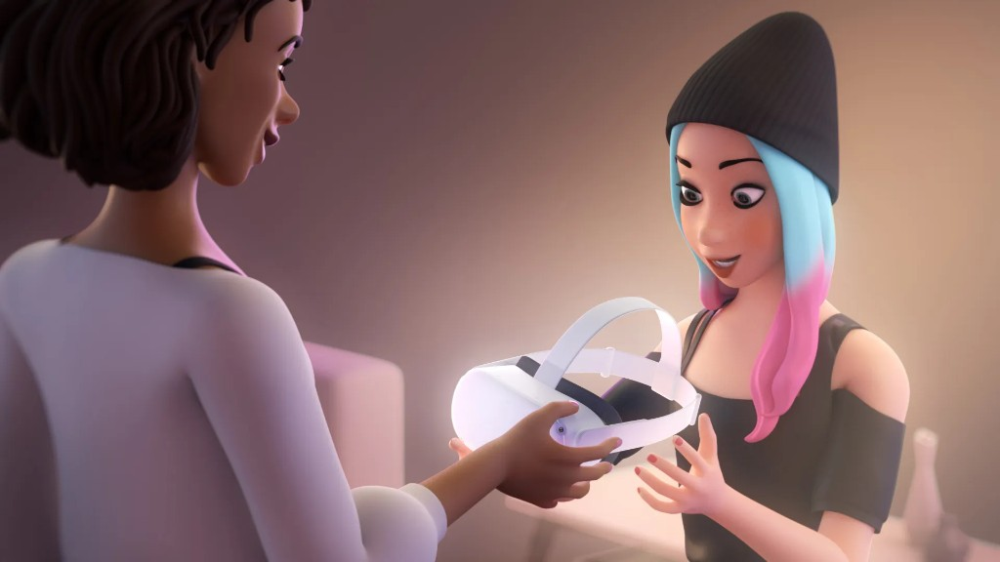

Real-time approvals across a phone and a headset
A teen pulls up a game inside a Quest. Their parent, on a phone in another room, gets a notification. A tap, an approval, a purchase, and the game launches. Two surfaces, one decision, all in seconds.
Underneath that moment is one of the most cross-cutting problems on Quest. The parent lives in a mobile app. The teen is wearing a headset they can't see out of. Between them, in real time: purchase approvals tied to live transactions, automatic blocks on age-rated apps, parent-set blocks on specific apps and browsers, time-in-VR visibility, a friends list, and a linking handshake the teen has to start and both sides have to consent to. Every flow had to touch IARC ratings, payments, push notifications, account graphs, and integrity policy. If the round-trip was slow, a sale evaporated, and a parent's trust with it.
I owned the system end-to-end as design DRI. The trust and revenue stakes were high enough that the company put a senior IC on it rather than split it across teams. I led alignment with product, policy, legal, privacy, and integrity, and held the bar that every interaction had to feel clear, fast, and respectful to both teen and parent, without softening a single safeguard.
The first piece, app locking through the unlock pattern, shipped in spring 2022. The full Parent Dashboard followed in June with Ask to Buy, app and browser blocking, screen-time visibility, and friend lists. Press covered the launch alongside Instagram's expanded parental controls as the first time Meta gave families a real handle on the headset. The work seeded Family Center, the cross-platform safety hub I helped pitch early on, now spanning Instagram, Facebook, Messenger, and Quest, with millions of households relying on it daily.



We made Quest a real shared device
A Quest rarely belongs to one person. It gets passed around. A partner trying VR for the first time. A kid asking for another turn. A friend who wants to see Beat Saber for themselves. Until 2021, all of them shared one account.
Every Quest account is its own world. Apps, saves, friends, payments, privacy. None of it can blur across users, and none of it can feel slow. Underneath the simple act of passing a headset sits account isolation, entitlements, sharing rules, lock patterns, mobile setup, and a fast in-VR switch.
I led design end-to-end. Research, competitive work, the full system, and a team of designers taking it through to launch. Multi-User accounts and App Sharing covered an admin and up to three additional users, distinct game progress and social graphs, and a shared library on a single device. It had to feel obvious the first time anyone touched it.
It launched in February 2021 as one of the most-requested features on the platform, and the press framed it as the long-overdue piece that made Quest a real shared device. Millions of households use it every month. Years later, it's still one of the highest-loved features on Quest.


Video on Marketplace, finally
Some things need to move. An engine turning over. A record player coming to life. A video shows a buyer in seconds what a dozen photos can't.
Video on Marketplace had been pitched and shelved more than once. The blocker was always the same. Any account can post a listing, so any account could post inappropriate video, and no one had a clean answer to the integrity risk. Marketplace serves more than a billion people each month.
I took the problem on individually. The reframe that opened it up: posting video isn't a right, it's an earned privilege. New accounts couldn't post video at all. Sellers earned access by building a track record of clean static listings. From there, audio ran through Meta's moderation pipeline for transcription review, and the video itself was sampled at the frame level for inappropriate imagery.
I took it through Integrity, Privacy, and Policy. Those three approvals had stopped every prior attempt. The work turned a long-blocked initiative into a foundational capability that Marketplace teams have been building on ever since.

Discovering the heart of a place
Destinations are the front door of lonelyplanet.com. Most inbound traffic lands on continents, countries, and cities. Passive feedback through Usabilla showed users were getting frustrated trying to find core information like top things to do and best hotels.
I led a redesign focused on inspiration first and helpful information close behind. We talked to users, tested several layouts, and landed on a new aesthetic that hit our goals. Engagement jumped immediately after shipping, and the work went on to win a People's Voice Webby Award.

Trips: a simpler way to share the road
Trips by Lonely Planet started with a simple idea. Make it almost effortless to share a travel experience. The whole strategy hinged on lowering the barrier to entry, so adoption depended on how easy it was to publish.
We built an experience where users upload photos and videos, and the trip is composed for them using location data. It became a place where travelers share, discover, and get inspired by the Lonely Planet community.

Guides: a confident companion on the ground
Guides by Lonely Planet is for the moment you arrive somewhere new and need fast, trusted help making decisions. The design had to feel like a confident companion you could pull out anywhere.
With features like offline maps and currency conversion, Guides earned an Editor's Choice Award and was repeatedly featured on the App Store and Google Play.